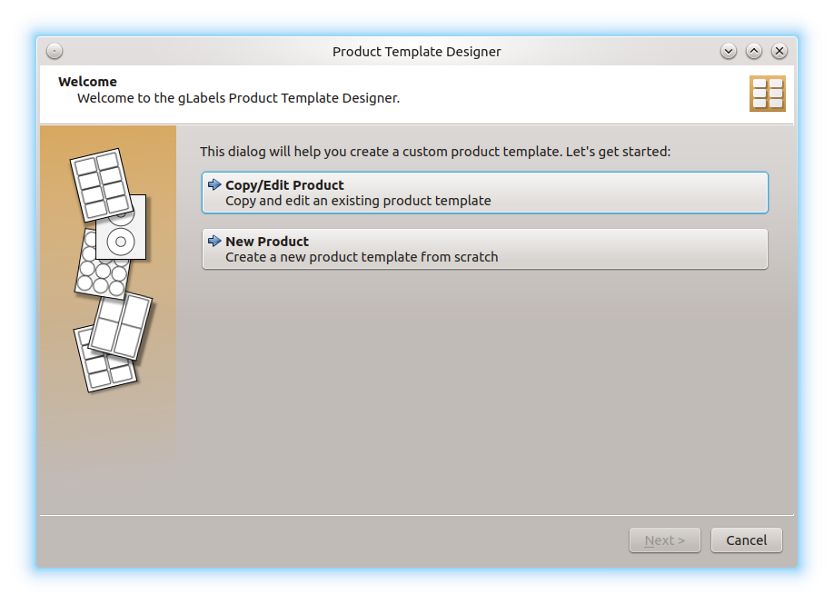
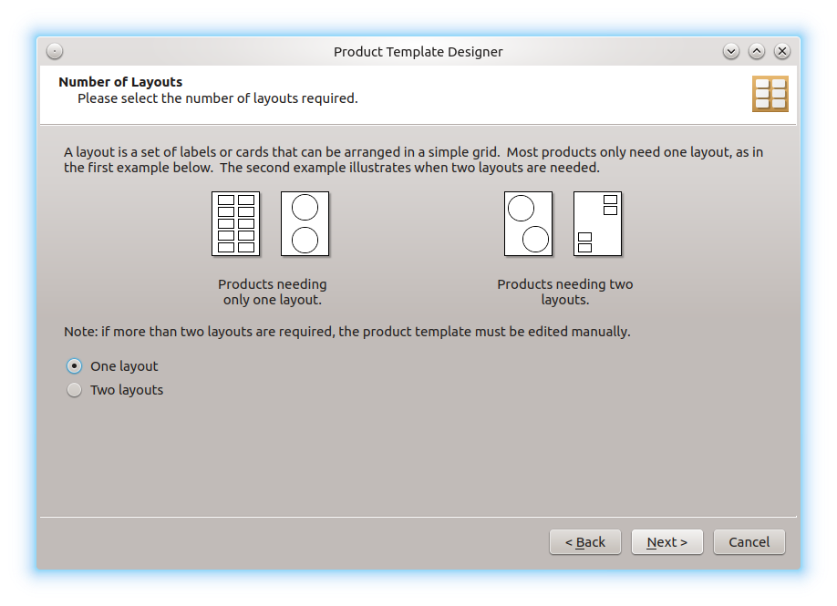
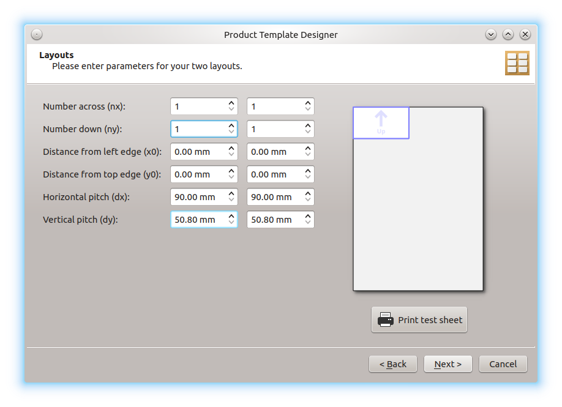

Product Template Designer¶
To create a custom template¶
To create a new custom template, choose File ➡ Template Designer … to display the Product Template Designer dialog. This dialog will assist you in creating a custom template for most types of label or card stationery that you may encounter.
Note
If you prefer, you can create your templates manually. For this option see Manually Creating Product Templates
In the Product Template Designer dialog, you can choose between two options:

Choose Copy/Edit Product if you like to reuse an existing product and change the values. If you like to create a new template from scratch, then choose New Product.
Use an existing product¶
If you have choosen for using an existing product, the gLabels – Select Product dialog appears, where you can choose the desired template (see Creating a New gLabels Project). In the next window, the fields with the template properties are already filled with the known values. Adjust the values to your liking and click on Next. In the next window, you can change the page size. Open the Page size: drop-down menu by clicking on it, and choose from the predefined paper sizes, or use the input fields below to specify the paper size yourself. Click on Next again. In the following windows, you can specify shape and size of the product. After that, you have to specify the product layout:

Sometimes, a stationery product contains to layouts at the same paper sheet. This is the case, for example, with stickers for CDs, which also contain rectangular stickers on the same sheet. If you have such a product, choose for Two layouts.
Note
The template designer does not support the rarely encountered products with more than two layouts. However, you can create such a template manually, see Manually Creating Product Templates.
After clicking on Next again, you can specify the values for the different layouts:

Once you are finished, you can test the layout by clicking on Print test sheet. To avoid excessive paper waste, you should print into a PDF file for your first attempts.
In the last window of the assistant, click on Save to save the new template. It will be presented next time you create a new project.
Create a new product template from scratch¶
If you have choosen for creating a new product template, you follow the same steps as above. The only difference is that no values have been entered yet and you have to fill everything in yourself. This makes sense if you haven’t found any similar templates in the collection.
Note
The template file itself is located in ~/.config/glabels.org/glabels-qt/, if you like to edit it manually. Please also consider to send the file to the developers for inclusion in a future gLabels release. To submit it, Open an issue at and attach your completed product template file(s).